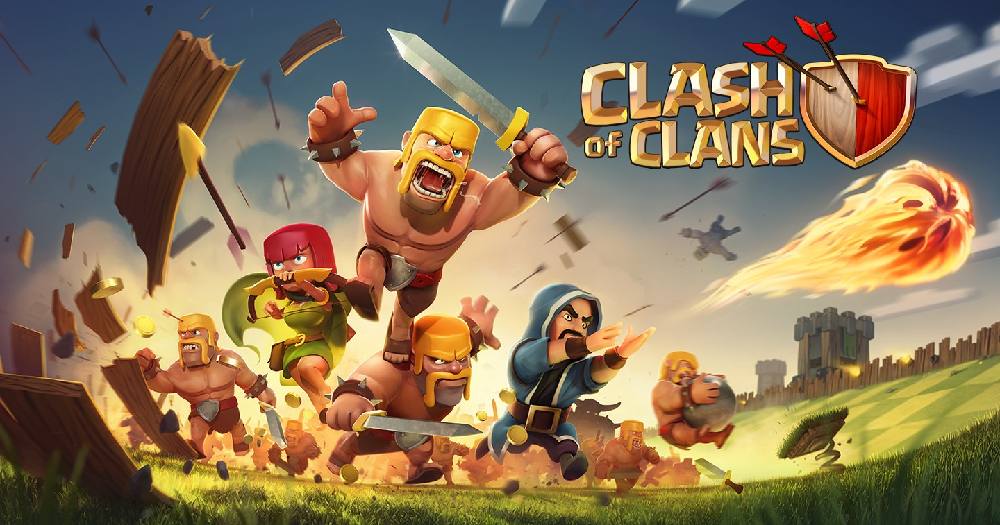
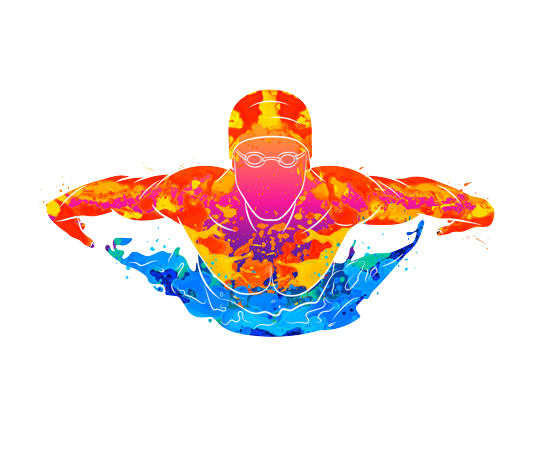

-
Katekyo Hitman Reborn!
-
One Piece
-
Naruto
-
Fullmetal Alchemist: Brotherhood
-
Fairy Tail
-
Bleach
TZXUN
My Favourite
Animation
Since childhood, I have loved the exaggerated, simple shapes and superhuman stunts of anime on
television. And now i still like it to see animation and sometime imagine myself as the
protagonist defeating the enemy and so on.
Here's a list of my favorite anime:

Games
Actually I'm not very interested in games, but one of the game I still play from when I was a kid
start playing, but I don't play it as before often as every day, just once every three or four
months. I'm not going to delete it because it's my first game as well as my first one on my
smartphone.
This game is called Clash of Clans

Sport
Sport is an enjoyable and healthy sport which can bring us joy, foster better friendships and help us grow taller. Of course, I also enjoy sports as well and my favourite sports are swimming, badminton and basketball.

